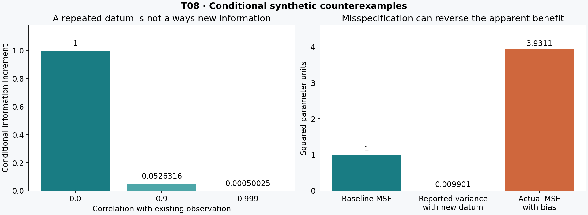
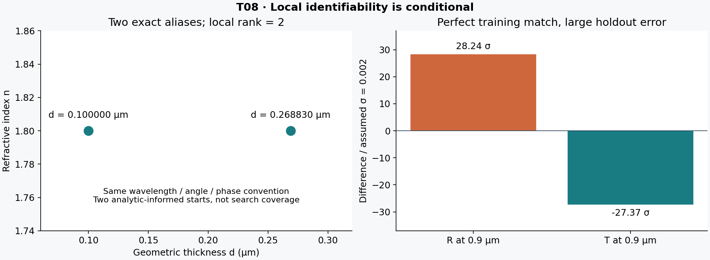

镀膜研究库 · T08 ROUND 2 · 2026-10-02
拟合得更精确， 模型失配 · 多解发现 · 剖面与留出 · 候选测量条件信息
只到本地冻结。所有数值为合成条件；用户实际仪器未知。完整163,584启动未运行，最多196,391,832次观测向量调用只是预算计划。小测试与一次窄核查不代表生产验证或完整审核链。
第1章 第2章 第3章 第4章 第5章 第6章 第7章 使用说明 · 状态 · 精确清单 · 下一有界交接

原创图，使用已保存小型合成证据。无真实测量、仪器排名或全局唯一证书。

原创图，使用已保存小型合成证据。无真实测量、仪器排名或全局唯一证书。
01 · 先定观测合同，再求参数
1.1 本轮回答什么
本轮研究在有限参数域内，怎样在模型可能不完整时反演薄膜参数、发现多个解释，并比较下一项测量的条件信息增量。交付数学、可运行参考实现和完整高算量驱动；不交付生产级材料常数、不宣称全局唯一、不把已找到的最佳点改名为真值。默认批量只生成计划，真实硬件与仪器未知不妨碍条件理论。
形式上，候选模型 m 给出 f_m(q;x,c)，其中 q 是波长、角度等采样设置，x=(θ,η) 为物理兴趣参数与校准/干扰参数，c 为观测合同。测得向量写成 y=f_m(x;c)+δ_m+ε。模型索引 m 不等于可连续优化的物理参数；δ_m 为模型差异，ε 为随机测量误差。没有额外结构时，δ 可吸收任意参数变化，所以“残差变小”不等于θ更接近物理真值。
参考模型只有一个光学层、实数半无限基片 n_s=1.52、非吸收入射端、各向同性非磁无增益、显式零散射。长度µm，时间 exp(-iωt)，N=n+ik，切向E幅度；继承T07冻结核，不改变相位基矢。有限/背面基片、偏振转化、部分相干、粗糙场反馈、真实材料传递均未实现。这里 T 是进入半无限基片的通量，不能解释成穿过真实基片的外部透过率。[RI-S06]
1.2 最小记录与噪声坐标
每条光学记录至少存 kind、中心λ(µm)、AOI(度)、偏振或明确rho基矢，以及可选谱/角节点和归一权重。R/T按功率逐节点平均；线性n模型也在每个真实节点求n。rho=(−r_p,tangential)/r_s 使用 opposed_reflected_p 基矢，仅支持单色单角相干射线；混合光束不能先平均rho或Δ。复rho以实部/虚部两坐标进入协方差，不把相位跨±π直接相减，不用无光信号处的相位增加自由度。
独立几何厚度记录 d_geo 带 independent=true；此声明仅为合成条件。参考d噪声0.002 µm，R/T噪声0.002绝对分数，rho各分量0.005，均为教学设定，绝非用户仪器规格。正定Σ是同一有序观测坐标的完整协方差；A=1−R−T不作为第三组独立数据。实测共享暗电流、参考片、同一天漂移等相关性不能默认不存在。
基片模式、半球收集范围、镜面排除、孔径、背面、NA、带宽和偏振合同应先匹配再比较。specular缺口可以包含散射，不能全部放入k。观测合同缺失应标unknown，不应让优化器把所有未知损耗悄悄转成吸收。
1.3 可执行候选族
参数边界：n0∈[1.1,3]，k∈[0,0.3]，d∈[0.005,1.5] µm，g∈[0.9,1.1]，a∈[−0.5,0.5]度；s∈[−0.5,0.5] µm^-1。尺度D=diag(0.2,0.02,0.05 µm,0.01,0.1度[,0.2 µm^-1])。尺度不是先验标准差，边界也不是已确认工艺范围。
全驱动AOI为10°/45°/65°，避免在法向处把有符号角偏差硬裁到0。参考核拒绝负AOI；未实现带入射面翻转的有符号角算子。候选复rho在60°；所有节点及偏差后的角度必须仍在算子域。增益后的读数可能大于1，表示校准坐标，不裁成物理功率。
1.4 物理身份不能由拟合补写
T04组分、膜态密度、温度、相态、孔隙、氧化与历史缺失时，不存在本轮验证过的工艺→n/k确定函数。public bulk不可填film，bulk α不可冒充film k；H4未知供应/组分仍未知，YbF3不可换成YF3。设计d、几何d、QCM等效d、nd分账；同一次反演的n/k/d不能再互相充当独立验证。
T05入射量不等于净留存。T06 Al仅为特定公开film参考的条件转移，省略氧化且未重现论文整栈；本轮没有复用该Al数值，也不继承其材料身份。此处所有n/k都是synthetic。
02 · 数据、校准、先验与模型候选分账
2.1 固定协方差高斯问题
令Σ为测量噪声协方差，K_m为预先声明的零均值随机差异协方差，V_m=Σ+K_m，L_m L_mᵀ=V_m，r=L_m⁻¹(f_m(x)−y)。独立校准观测c_j和参数先验μ_l分别定义 u_j=(x_j−c_j)/s_cj，v_l=(x_l−μ_l)/s_pl。需要同源相关校准时必须用联合协方差，不能重复当独立信息。
本轮优化 Q_opt=Q_data+Q_cal+Q_prior，其中 Q_data=½rᵀr，Q_cal=½Σu_j²，Q_prior=½Σv_l²。单列模型项 P_m 和 ½log det V_m=Σlog L_ii，得到声明评分 Q_declared=Q_opt+P_m+½log det V_m。程序同时输出只按Σ归一的raw_noise_only_chi2；差异协方差变大不会让原始噪声失配在报告中消失。
本实现m内V固定，logdet不影响该模型的优化位置；跨m若V不同，遗漏logdet会偏好任意膨胀协方差。若将噪声尺度、K幅度、相关长度等作为未知参数，必须把它们的归一化项、导数、先验与边界加回联合目标；本实现不提供这个分支。
独立gain校准为1±0.005，AOI偏差为0±0.1度，均合成。默认参数先验列表为空、P_m=0，结构允许显式加入但不代替证据。报告不能把校准/先验提高的局部秩叫作光学数据本身辨识成功。
2.2 低秩差异到底改变了什么
参考K=FFᵀ。R/T每个名义中心的行 F_i=[0.003,0.005(λ_i−0.6)]；rho与d行置零。可理解为两个标准正态共享随机系数，在整次观测中共同造成偏移/斜率。0.005带有每µm的观测比例变化单位，F两列都在最终观测坐标单位内。这不是自动的物理散射模型，也不意味着rho/d实际无系统误差。
若另用显式δ=Bβ、β~N(0,Cβ)，固定参数下边缘化得到 V=Σ+BCβBᵀ。联合MAP中最小化 ½||Σ^-½(y−f−Bβ)||²+½||Cβ^-½β||² 的最优残差值与边缘二次型相关，但边缘似然还含行列式项；不能混用MAP惩罚最优值和模型证据。更不能一边把β当自由无约束函数，一边宣称物理θ获得唯一确定。
Brynjarsdóttir与O’Hagan的原始校准研究指出，忽略差异可产生偏置和过度自信，而加入宽松差异模型也可能仍然无法识别物理参数；差异与校准参数的混淆需要有意义的约束。[RI-S02] 本包仅用其结论确定问题边界，没有复现其算例。
2.3 Huber稳健项的范围
本轮可将数据项替换为 ρ_c(r)=½r² (|r|≤c)，否则 c|r|−½c²，c=1.5；Q_data=Σρ_c(r_i)。其导数ψ为截断的r，压低孤立大残差的影响。程序把每个数据残差映射为 sign(r)√(2ρ_c(r))，再用线性least_squares；校准和先验残差原样拼接，绝不跟着数据一起降权。公式对应SciPy官方loss定义的同一Huber形状，但此处自行分块以免robustify辅助证据。[RI-S01]
重要限制：逐坐标Huber在“按记录顺序的Cholesky白化坐标”中定义。高斯平方和在正交白化旋转下不变，逐坐标Huber通常不变性不成立；换记录顺序/白化基可能改变稳健解。应预先定基，或针对有物理含义的独立观测块设计径向稳健损失及相应统计解释。本轮不将该criterion称作已校准的概率似然，不对不同loss直接作Bayes证据比较。
稳健损失解决不了共同偏差：20个真实位置0的观测全部偏到2，Huber也会估2。20个0加一个20的离群点时，普通均值约0.95238，Huber约0.075。两个例子都在小型diagnostics中执行。由此不能推出“稳健模型已正确”；小残差、少离群与真实物理解释是三件不同的事。
2.4 误设下的不确定度
若估计方程为Σs_i(x)=0，独立重复条件下的三明治近似为 A⁻¹ B A⁻ᵀ，A为负平均导数、B为得分协方差；样本量因子随总和或均值约定一起给定。相关光谱需成组重复或相关得分估计，不能把每个谱点当独立重复。校准/先验带来的曲率也不自动给出同样的频率学覆盖。
本轮不实现经过实测验证的sandwich、稳健profile置信阈值或参数后验。返回confidence_interval=null；不能用最小二乘返回的Jacobian逆矩阵宣称Huber覆盖。边界k=0、多个别名、候选错误、未收敛、估计噪声和有限样本都可能破坏通常的χ²阈值近似。
03 · 预算可审查的多解发现与剖面
3.1 搜索结果应叫什么
算法先声明候选模型、物理域、尺度、起点产生规则、随机种子、每启动的最大前向调用数和局部求解容差。每个起点运行有界trust-region least_squares；保存终止信息、solver_nfev、最佳已评估点、完整起点、边界激活和实际前向预算。有限差分产生的调用同样计费，不能拿库的nfev冒充真正的模型调用总数。SciPy文档明确区分数值Jacobian额外评估。[RI-S01]
一个预算单位是一整条观测向量预测，不是单波长一次核计算。另记录charged_optical_kernel_calls_upper_bound：每个光学谱/角节点计两种偏振核，d节点为零；成功路径精确，若中途算子拒绝则是已收费上界。账本在进入算子前计费，包括生成、拟合、profile、留出和设计导数，防止“验证免费”的隐形重算。
每启动的硬上限靠残差包装器执行，库max_nfev只是附加停止条件。触顶或评价失败保留此前最佳点并标converged=false。一个求解器success也只是其局部停止规则；best_evaluated可能来自某个差分试探，报告同时保存solver_endpoint，未伪装精确驻点。全局账本超限仍保留已写分支；默认计划要求用户显式提供足够最坏预算，不能静默运行更大批量。
3.2 多解聚类与发现概率
按Q_opt排序，在 z=D⁻¹x 坐标用阈值0.2的欧氏距离做贪心代表聚类，保存每簇成员与是否收敛。距离阈值不是置信域半径，贪心簇不是吸引域拓扑证明；点可能因尺度/阈值改变合并或分开。未收敛的低值点仍留下用于诊断，不标成已认证解。近似等值的容许ΔQ要与噪声、目标与验证目的一起预先声明，本包不硬编码统计接受阈值。
如果某吸引域在指定随机起点分布下概率为p，独立S次都漏掉的概率为(1−p)^S；未知p时，这个公式不产生覆盖证书。高维均匀起点、准随机点、退火/差分进化、needle或混合搜索都只能改善经验探索，不能把“没再找到”变成“没有”。若确需全局唯一性证书，需要额外的解析结构、区间包围与分支定界或严格可证伪界；本轮没有实现或声称这些能力。
3.3 局部rank 2而全局仍有精确别名
透明单层k=0，单波长λ、外部角a、入射n=1下，k_z=√(n²−sin²a)。厚度周期 Δd=λ/(2k_z) 使往返相位改变2π；反射复振幅及R、T在该条件下不变。对n=1.8，λ=0.55 µm，a=50°，d=0.1 µm与约0.268830019659 µm给相同s/p反射和复rho。
本轮用Rs、Rp和rho实虚部的4维观测，以(n,d)为2参数得到数值局部rank 2，却仍有上述精确别名。两个靠近解析别名的起点、合计30次向量评价发现两个簇，数据目标约10^-27，观测差约7×10^-18。起点明确利用已知别名，是路由/公式测试，绝非盲搜覆盖率。正常单色无损R/T例同时保留，因R+T=1，其(n,d)Jacobian秩不超过1。
局部一阶满秩只在正则内点条件下支持局部唯一；奇异Jacobian也不能单凭这一点证明非唯一，例如x³在0导数为0仍单射。边界、差分误差与参数化奇点需另外处理。
3.4 有限剖面不是区间证书
固定θ_j=t，重新优化所有其余物理和nuisance参数，定义 Q_prof(t)=inf Q_opt(t,x_-j)。Raue等的原方法强调逐点重新优化其它参数，而不是冻结它们。[RI-S03] 实现逐网格点、逐原始起点重启；支持显式数据-only问题或包含校准/先验的penalized profile，两者解释必须分开。
有限预算返回的最小值是该固定t真实infimum的上估计；若多个网格点优化不充分，假峰可能制造虚假窄区间。网格点之间的谷底、域边界外解、未尝试模型都未排除。只有同一目标与相同常数项才能作ΔQ；数据χ²阈值不能直接套在Huber或带先验的曲线上。本轮confidence_interval始终null。
Tiny driver两个profile端点都用满45次调用：低端由ftol/xtol终止，高端耗尽预算而未收敛；此事保留在原始结果，不因主拟合converged而改写成“剖面验证通过”。完整41点剖面和100次重复噪声拟合仍待用户后续安排设备。
04 · 留出预测、候选模型和反例
4.1 留出需要独立于选择
全驱动先固定训练波长0.42–0.78 µm的13个点和10°/45°/65°，每点含s/p的R/T；留出用55°、波长0.455/0.535/0.615/0.695/0.85/0.95 µm。后两点相对训练范围是外推，但仍处于0.4–1.0 µm前向合同域内。相同样品状态是假设，换样品不得无证据共享n/k。
留出定义和噪声在拟合前存档。程序对保留簇的代表输出预测和残差，不用留出结果自动选赢家。若之后据此调模型/超参数，这组留出就变成开发验证集；最终表现要另设未触碰测试集或嵌套流程。相邻光谱点若共用漂移，并非天然独立留出。
4.2 相关差异的条件预测
设训练F、留出H的固定联合协方差为 [V_FF,V_FH;V_HF,V_HH]。在固定x下，训练残差e_F=y_F−f_F，留出的条件均值为 f_H+V_HF V_FF⁻¹e_F，条件协方差 S_H=V_HH−V_HF V_FF⁻¹V_FH。创新e_H=y_H−上述均值，条件负对数密度为½e_HᵀS_H⁻¹e_H+½logdet S_H+(m_H/2)log2π。
程序对constant_correlated_discrepancy使用共享F特征构造跨集合协方差；其它候选本例默认训练/留出测量噪声独立。未把每次新增测量都重置成独立差异，这避免同一系统偏差被重复计成新信息。
重要：这里用拟合后的x代入，却没有积分参数不确定度，也没有处理fit-selection造成的分布变化。chi2_plugin和negative_log_predictive_density_plugin仅诊断，不是已校准覆盖率。多簇的预测必须分别查看；簇次数不能直接当后验权重。候选模型先验、边缘化与归一化若未知，不做模型平均概率。
4.3 三个全驱动压力场景
1. clean：恒定n/k真值，按已知合成Σ加入高斯噪声
2. single_outlier：训练第一个R额外偏0.04，再加随机噪声；该偏差在重复噪声试验中保持，因此是条件重复，而非随机污染率模型
3. dispersion_mismatch：真值n(λ)=n0+0.35(λ−0.6)，其余不变；用constant、linear_n和固定相关差异候选分别拟合
同一case的模型/loss用同一已保存数据，随机起点由固定种子顺序生成，但默认未做common-random-number起点配对。因此性能差异若日后分析必须计入求解预算与起点差别，不能把单次较低目标解释成算法普遍优越。
一次必要小反例不需要大批拟合：在λ=0.6 µm训练，constant与linear_n(s=0.35)完全相同；到λ=0.9 µm、55°，R/T差约28.24与−27.37个0.002噪声单位。拟合点上完全一致不能认证外推模型，也不能因为“训练里数据点很多”就消除共同参数化错误。
4.4 模型差异与测量选择的双重目的
Krishna等原文把校准参数识别与发现/估计模型差异的测量作用区分，并讨论局部参数设计与空间覆盖的组合。[RI-S04] Catanach与Das另将模型失配下的预期信息和区分模型的能力作为不同设计目标。[RI-S05] 本轮没有移植或验证这些论文算法；据此保留两个输出问题：哪项观测有助于缩小已假定模型内的不确定性，哪项观测有机会暴露模型错误。
新观测可使候选之间的预测分离，却对单个候选的局部参数信息很小；反之，某观测对所有候选都很敏感但共同漏项严重。建议同时报告：候选间预测跨度、各簇局部信息、预计重复/校准成本、失配压力下偏差。真正的minimax或Bayes跨模型设计需额外定义模型权重/失配集合，本轮不以任意默认权重替用户决定。
05 · 候选测量的信息应按条件增量计算
5.1 先对白化噪声条件化
在同一候选m、同一参数点x附近，现有观测y0和新观测y1的参数导数为J0、J1，协方差为 C=[C0,Bᵀ;B,C1]，B=Cov(y1,y0)。要求联合矩阵正定；导数针对无量纲z，即x=x_ref+Dz。若协方差依参数变化，均值导数之外还存在Fisher项；本章与代码均固定协方差，不使用该扩展。
新观测在旧观测条件下的创新协方差 S=C1−B C0⁻¹Bᵀ；均值的参数导数 G=J1−B C0⁻¹J0。因此 A0=L0⁻¹J0、Ac=Ls⁻¹G，联合信息 I_joint=A0ᵀA0+AcᵀAc。新增完整参数信息是 ΔI=GᵀS⁻¹G，而不是简单J1ᵀC1⁻¹J1。
这个式子可由高斯密度p(y0,y1)=p(y0)p(y1|y0)分解，也可由分块逆矩阵直接验证。独立窄核查用非零相关块复算，与J_jointᵀC_joint⁻¹J_joint的差小于9×10^-16。若差异K跨测量共享，它也必须进入B；不能一旦新增仪器就默认全部误差独立。
5.2 然后在相同nuisance空间剖除
把白化导数按兴趣参数θ=(n0,k,d)和nuisance η=(gain,AOI偏差[,色散斜率])分为[U,N]。无约束局部最小二乘剖除η后，I_eff=Uᵀ(I−P_N)U，P_N是N列空间正交投影。用SVD构造投影，可容纳奇异N；不通过给奇异信息任意加jitter伪造可逆性。
计算前后信息必须使用同一nuisance空间。若新测量有新增未知厚度偏置b，在旧观测中加全零b列，在新观测中加∂d/∂b=D_b的列，然后再比较。不能先单独剖除旧、再把未剖除的新信息加上。对任意θ方向u，新增残差平方非负；在同一η空间对总和取infimum不小于旧项的infimum，因此ΔI_eff半正定（仅有数值截断误差时可见微小负特征值）。这不表示真实偏差或MSE必然改善。
校准项的行不是1/σ本身，而是D_j/σ_cj，例如AOI尺度0.1度、校准σ=0.1度时行系数1，无量纲。先验同理；代码分别输出data_only、with_calibration、with_calibration_and_prior三层，校准行只加一次。有限参数边界在这里按局部无约束切空间近似，活动约束处不宣称对称高斯协方差有效。
5.3 三项条件候选，而非仪器购物清单
1. λ=0.55 µm、60°的复rho：需要已定义基矢、无退偏、噪声与相位校准；合成成本3
2. 独立几何d且偏置已校准：σ=0.002 µm；合成成本2
3. 同一d读数带完全未知的独立加性偏置：显式加入新nuisance，尺度0.05 µm；合成成本2
第三项只有一个新d方向且一个完全自由的行内偏置，剖除后增量恰为0。第二项有校准后才可能有效。成本是任意条件单位，未将其换算成用户时间、金额或仪器可用性，也未输出跨设备排行榜。
当I_eff,0和I_eff,1均数值满秩且足够稳定，可计算½log(det I1/det I0)，仅是固定模型/局部高斯精度体积变化。在适当线性高斯后验假设下可与信息增益联系，但此处没有对未知参数、未知模型、未来数据积分，因此不命名为完整EIG。奇异时返回null，不将伪行列式跨变化秩直接相除。还输出原始矩阵、增量特征值、nuisance秩和阈值，供人工查阅。
导数用尺度步长h=5e-5、1e-4、2e-4；内点二阶中心差分，边界二阶单边差分。记录每一方案、协方差、尺度与数值阈值。法向rho没有可用参数方向、窄带相位别名和低信号相位退化仍是继承限制。不同步长rank变化是警告，不选最乐观阈值宣布成功。
5.4 两个可手算的否定例
重复标量观测，J0=J1=1，Var=1，相关系数ρ，则G=1−ρ、S=1−ρ²，ΔI=(1−ρ)/(1+ρ)。ρ=0时增量1，ρ=0.9时约0.05263，ρ=0.999时约0.00050025。同一偏差下密集采样很难获得按点数线性增长的信息；ρ=1时联合矩阵奇异，代码拒绝，须先移除冗余坐标。
另一例：旧测量无偏、方差1；新测量方差0.01但漏掉偏差b=2。错误模型报告信息增量100，组合方差1/101≈0.00990099；估计偏差为2/1.01，真实MSE≈3.93109，大于只用旧测量的MSE=1。局部信息增加与物理估计变差同时成立。Huber也未必救场，因为共同误设可以形成一致而“可信”的一组残差。
5.5 可执行与未执行的分界
当前实现按每个候选m和每个保留簇、每个h分别算局部信息，不把一簇结果推广到整个可行域。真正稳健试验选择应在可接受模型/别名/差异集合上报告最坏情形、分位数或明确权重的平均效用，并保留成本、样品损伤和状态转移约束。集合/权重需要证据，这一优化与实测验证是后续工作，不能由本轮三个教学成本替代。
06 · 完整驱动、预算与复现
6.1 高算量driver先行，默认不跑
先建立完整batch_driver.py接口与预算计划，再实现算子/目标/诊断模块与必要小测试。默认命令仅打印plan_only，既不创建执行目录，也不启动拟合。全计划为4真值×3场景×3候选×2损失×16起点×(1次主拟合+41个d剖面网格+100次重复噪声)=163,584次拟合启动。
每启动上限1,200次完整观测向量评价，拟合调用天花板196,300,800；留出/信息导数按最多8簇、3个步长、最多6参数和3项候选保守计91,032次，合计196,391,832。该数不是耗时、单核调用数或内存预测。p≤6时一次二阶Jacobian有1+2p次函数调用，计划取13；新d偏置列解析加入，不额外占导数调用。每case真值生成两次已计入。
存储量可显著增长：每case/model/loss保存全部启动与剖面/重复拟合证据。当前无并行、自动重试、断点恢复、压缩或隐藏云作业；每完成一个分支写progress.json，已存在输出目录拒绝覆盖。执行前由用户选择机器和预算；设备失败或中断后的resume策略需后续显式设计，不能覆盖原记录假称连续完成。
全driver已实现所有声明分支。未跑完整批量，因此其长时稳定性、覆盖率、收敛比例、真实性能与资源占用都未验收。默认configuration中heavy_run是待运行描述；最终run_receipt中的heavy_run表示是否实际执行非tiny配置，二者字段所在上下文不同，不能据计划配置说已经运行。
6.2 命令
在本目录运行，建议固定PYTHONDONTWRITEBYTECODE=1、PYTHONPATH=models，避免缓存污染冻结包。
- python models/batch_driver.py：全计划，不执行
- python -m unittest discover -s tests -v：必要小型正确性测试
- python models/diagnostics.py：原创反例与两起点光学别名路由
- python models/batch_driver.py --tiny --execute --max-jobs 3 --max-forward-calls 191 --output verification/一个全新目录：3启动路由测试
- python models/reader.py --directory .：只读精确清单/内容检查
- python models/reader.py --directory . --isolated：隔离复制reader允许内容并跑小测试，不跑完整driver
未来完整执行需同时显式--execute、全新--output、--max-jobs 163584和--max-forward-calls 196391832。这里给出参数供安排，不自动调用。输出必须在当前增量目录内；用户日后应先复制到其选定设备并保持原冻结副本只读。
6.3 已执行证据与不能推出的结论
小型单元测试涵盖冻结核hash、条件矩阵恒等式、相关重复、未校准d偏置、奇异联合协方差拒绝、Huber分块、Σ/K分离、硬调用计数、多起点、剖面重拟合、单位、合同拒绝、谱节点色散、预算与k=0单边导数。具体通过数以verification/unit_tests.txt为准。
Tiny主拟合1启动收敛，低端profile在45调用满足ftol/xtol，高端profile在45调用耗尽预算而未收敛；共176向量调用、3启动，未隐去失败。此tiny只跑constant+Gaussian+clean，不能宣称全部大矩阵执行成功。其它候选/loss通过的小测试只能支持对应公式或接口，不代表全批验证。
独立核查只有一次GPT-6 Luna窄数学/量纲检查：相关条件信息、nuisance空间与校准/厚度偏置尺度。无该范围错误不等于全面工程审查；没有假称DeepSeek执行、Seed Pro阶段独审或Sol完整算法审核已经完成。
6.4 可移植性
Python参考实现依赖numpy/scipy/matplotlib；冻结记录实际环境版本，requirements只定义最低功能依赖，未锁住整个操作系统/BLAS。数值迭代次数可因库版本不同变化，必须分别看数学容差和执行账本；冻结hash保证输入字节，不保证各平台浮点逐位一致。原始论文PDF和提取文本只在本地originals区存档，不属于离线reader运行依赖。
07 · 验收、来源与不能晋升的上游状态
7.1 本地完成的验收边界
本轮允许写入仅08_stack_optimization_algorithms/round2_robust_inversion。需求来自原工程科研目标及T07下一轮交接；上游内容按读取hash记录，冻结kernel/measurement/identifiability逐字拷入vendor并保留SHA256来源链。新目标/算子包装不修改原文件；本地reader可独立运行，无需读取上游树。
验收结论为implementation_ready_validation_pending：目标分解、有限预算、剖面重拟合、条件留出与局部测量设计可运行，小检查通过；真实样品/仪器/硬件、高算量验证、置信覆盖、完整指定模型链与生产资格未完成。不是accepted，不是production_qualified。
7.2 七轴及继承限制
- source：真实film材料身份、数据协方差、样品历史未获确认；不能用public bulk代替
- time：温漂、老化、工艺演化与非同时采样未测，不能置零当已校准
- space：厚度/组分非均匀、光斑不一致可能使共同参数失效
- geometry：AOI、NA、方位、背面、孔径、相干性、收集条件必须同合同
- kernel：分支、离散、有限差分与秩阈值只有小型数值检查；稳定不代表物理正确
- input：参数范围/尺度、噪声和校准仅synthetic；未知不能冒充总误差已闭合
- model：氧化、散射、粗糙、各向异性、色散参数化和仪器漏项仍需独立证据
T02 v0.3完整oracle仍partial；T03非负贡献优化器不支持净侵蚀；点12连续参考/离子参考与设备验证not_run；τ仍非严格条件包络。QCM声学、温漂、tooling、源强/形状与ηQ的辨识缺口未因光学拟合而解决。用户新送资料若尚未审读，不进入当前合同，也不由名称推断用户持有任何仪器。
7.3 原始来源与著作权
来源为原作者研究、作者预印本和官方软件文档。sources/source_registry.json逐项记录实际读到的范围、链接、版本和不支持的推论；sources/summaries保存原创短摘要。无法获取的全文不声称已读，未使用搜索摘要推导未看见的实验数值。除明确归属的简短方法说明外，所有本轮推导与反例为项目原创。
RI-S04/05从arXiv官方公开下载，分别核实作者/题名和25页/9页PDF；其阅读和下载授权不等于本项目有权镜像传播。PDF与提取文本只用于本地科研保存，整个sources/originals路径排除reader。无论文图、全文、缓存或压缩归档混入reader允许列表。允许列表存在仅证明技术隔离，不构成发布授权。
7.4 冻结证据
本轮保存开工时目录外每个文件的SHA256，完成时做逐字节差异检查。协调者同时维护规划或其它被授权任务时，必须逐路径记录原/新hash和已确认归属；不能静默换基线把外部变化抹掉，也不能把其它任务的修改算成T08成果。
freeze_manifest以精确路径、字节数、SHA256列出reader payload；originals另列local-only身份。验证器检查缺失、修改和额外内容，允许列表与manifest必须一致。freeze_receipt、outside快照/差异证据为作者本地证明，不递归自包含于自己hash；清单与receipt另外明确排除。这是防意外变更机制，不是可信签名或抵抗有写权限者的安全认证。
7.5 发布历史和停止条件
早先四项增量已由协调者发布并核验于31744525b4cdde04fad31aaf58e6148f7819ce62。T07冻结handoff内“等待旧四项发布”的句子是当时记录，保留字节不改；T06/T07本地增量并未包含在那一批。当前T08未push、上传、部署、对外分享，亦未启动用户电脑或真实硬件实验。
做到本地reader、manifest、freeze receipt和下一有界交接后停止。下一轮建议不自动授权新目录、设备实验或发布；规划状态与未来批次由协调者负责。
原始来源与阅读范围 RI-S01 · scipy.optimize.least_squares — official manual RI-S01 · scipy.optimize.least_squares — official manual
官方文档定义有界非线性最小二乘、损失形状与尺度，并说明max_nfev不含数值Jacobian的额外函数评估。本包因此独立计每次前向调用；为只稳健化数据而保留校准/先验平方项，使用分块残差变换。文档不能替本包作物理或覆盖验收。
原始来源：https://docs.scipy.org/doc/scipy/reference/generated/scipy.optimize.least_squares.html
已读范围：Read official parameter definitions and solver semantics; online manual reports v1.18.0, installed version independently recorded
原始来源
RI-S02 · Learning about physical parameters: the importance of model discrepancy RI-S02 · Learning about physical parameters: the importance of model discrepancy
作者原始校准研究的公开摘要指出，忽略模型差异可能造成偏置与过度自信；差异和物理参数可互相混淆，加入差异项本身不足以解决参数辨识，需要有意义的约束。仅使用摘要支持这些定性边界，没有借用未读全文的数值。
原始来源：https://doi.org/10.1088/0266-5611/30/11/114007
已读范围：Read accessible original publisher abstract via DOI search result; author-PDF attempt unavailable; no commercial full text obtained
原始来源
RI-S03 · Structural and practical identifiability analysis of partially observed dynamical models by exploiting the profile likelihood RI-S03 · Structural and practical identifiability analysis of partially observed dynamical models by exploiting the profile likelihood
原文剖面方法在固定一个参数时重新优化其它参数，并用剖面路径讨论可辨识与试验选择。本包实现有限网格、有限多起点的上估计，保留失败；没有把其统计阈值直接移植到Huber、惩罚目标或光学误设。
原始来源：https://academic.oup.com/bioinformatics/article/25/15/1923/213246
已读范围：Read selected publisher full-HTML methodology sections and profile discussion
原始来源
RI-S04 · Robust Experimental Designs for Model Calibration RI-S04 · Robust Experimental Designs for Model Calibration
原作者讨论非线性模型校准试验的模型形式不确定性和参数不确定性。方法把局部参数设计与估计/发现差异的覆盖点区分，并说明局部最优依赖猜测参数。本包只借此保持两种设计目的，不宣称复现其MaxPro或工业例结果。
原始来源：https://arxiv.org/abs/2008.00547v1
已读范围：Read abstract and method portions of official 25-page PDF/HTML; PDF and text locally archived
原始来源
RI-S05 · Metrics for Bayesian Optimal Experiment Design under Model Misspecification RI-S05 · Metrics for Bayesian Optimal Experiment Design under Model Misspecification
原作者将模型失配下的信息、识别差异的能力与通常EIG区分，并在声明的线性高斯系统推导信息公式。本包只提供固定参数局部精度比，明确不等同于对模型与未来数据积分的完整EIG、EGIG或EDI。
原始来源：https://arxiv.org/abs/2304.07949v1
已读范围：Read abstract and definition/Gaussian method portions of official 9-page PDF, locally archived
原始来源
RI-S06 · Multilayer optical calculations RI-S06 · Multilayer optical calculations
作者方法说明平面多层薄膜的幅度、功率与偏振符号合同。本轮沿用T07切向E核与明确反射p基矢，不能把文献平面光学模型延伸成未知仪器、退偏或散射模型。
原始来源：https://arxiv.org/html/1603.02720v5
已读范围：Re-read original author HTML and frozen T07 measurement/kernel contracts
原始来源
代码与可复现证据 原始PDF/提取文本仅本地保存，未放入reader。数据目录含原件身份清单，不含其内容。下面的链接均为相对路径，离线阅读不依赖外部网站。
models models/vendor tests data reviews verification 最终tiny完整拟合/剖面/设计记录 · tiny原始合成观测
哈希检测内容变化，不是可信签名；允许列表不构成发布许可。根规划和后续批次由协调者安排。